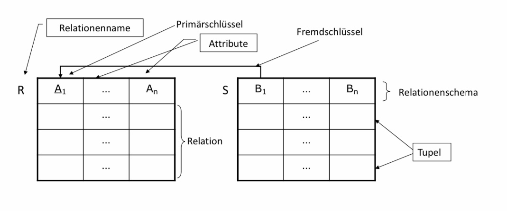
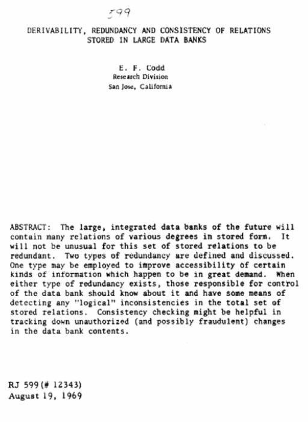
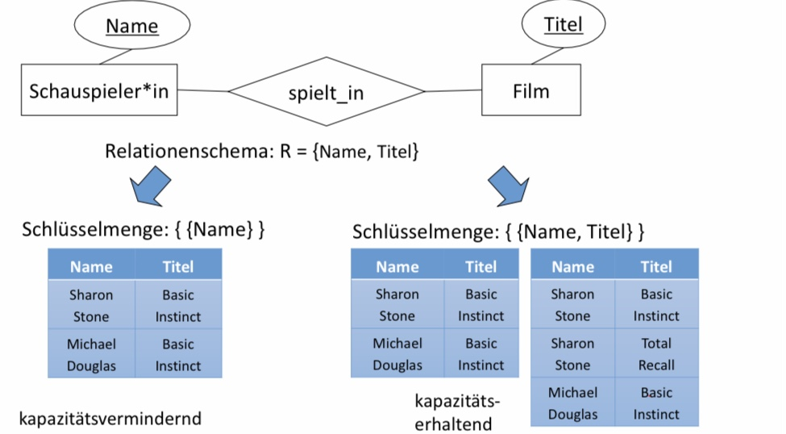
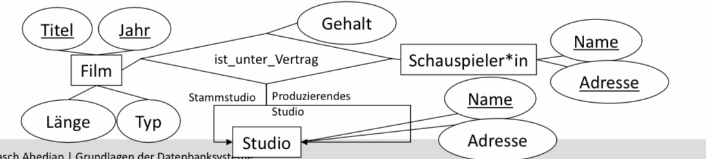
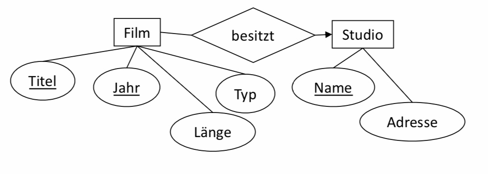
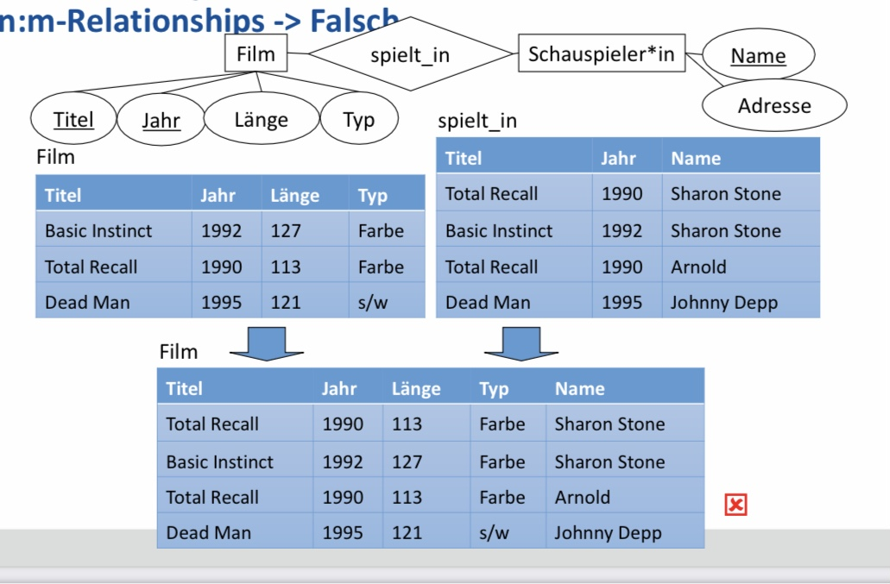
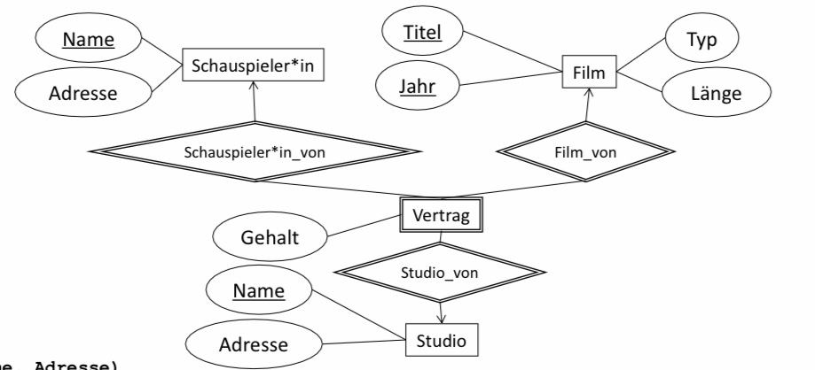

Relationaler Entwurf
Contents
6. Relationaler Entwurf¶
6.1. Das Relationale Modell¶
6.1.1. Die Relation in der Mathematik¶
■ Eine Relation R ist eine Menge von n-Tupeln.
■ Dinge, die in der Relation R zueinander stehen, bilden ein n-Tupel, das Element von R ist.
■ Teilmenge des Kartesischen Produkts
□ R \(\subseteq\) A1 ×… × An
□ A1 ×… × An := {(a1,…, an) | a1\(\subseteq\)A1\(\in\) … \(\in\)an \(\subseteq\)An}
■ Für Datenbanken:
□ Mengen A1,…, An sind Domänen (Wertebereiche)
– Z.B.: Integer, String, String, Boolean, usw.
– Entspricht Spalten einer Tabelle
□ Tupel (a1,…, an) sind die Datenwerte
– Z.B. (4, Abedjan, Berlin, m)
– Entspricht Zeilen einer Tabelle
6.1.2. Die Relation¶
■ Konzeptuell ist eine Datenbank eine Menge von Tabellen.
□ Relation zwischen Werten der Attributdomänen
□ Tabellen = Relationen
■ Die Relation ist das einzige Konstrukt des relationalen Modells
□ Sehr einfach
□ Einfach in einer DB abzubilden (zwei-dimensional)
□ Relationen können nicht nur Entities sondern auch Relationships darstellen.
□ Entspricht oft unserer Vorstellung der Daten
□ Ist das abstrakte Modell hinter SQL
6.1.3. Elemente des Relationalen Modells¶

Datenbankschema
Besteht aus einem oder mehreren Relationenschemata.
Relationenschema
Name der Relations sowie Liste der Attribute mit Domäne
Weitere Einträge in der Tabelle: Die „Relation“
Besteht aus keinem oder mehr Tupeln.
Eine Zeile der Tabelle: Tupel
Die Tupel bilden eine Menge (nicht eine Liste).
Eine Spaltenüberschrift: Attribut
Attribute bilden eine Menge (nicht eine Liste).
Ein Eintrag: Attributwert
Atomar
Stammt aus einer elementaren Domäne (Integer, String, …)
6.1.4. Formal¶
■ Domänen D1, …, Dn
■ Relation R \(\subseteq\) D1 x … x Dn
■ Beispiel
□ Relationenschema: Film(Titel, Jahr, Länge, Typ)
□ Domänen: String, Integer, Integer, String
□ Tupel: (Star Wars, 1977, 124, farbig)
6.1.5. Edgar F. Codd¶
Promotion an der University of Michigan Ann Arbor
Entwicklung des Relationalen Modells bei IBM (Almaden)
„A Relational Model of Data for Large Shared Data Banks” (1970)
Artikelserie
Literaturhinweis:
The Database Relational Model: A Retrospective Review and Analysis:
A Historical Account and Assessment of E. F. Codd’s Contribution to the Field of Database Technology
Chris J. Date
ISBN: 0-201-61294-1 (9.99 EUR)
6.1.5.1. Beiträge von Codd¶
■ Transformation des Datenmanagement zu einer Wissenschaft
□ Entsprechende Klarheit und Strenge
■ Nicht nur das relationale Modell, sondern überhaupt das Konzept eines Datenmodells
□ Unterscheidung zwischen Modell und Implementierung
■ Relationale Algebra und relationales Kalkül
■ Informell: Anfragesprache Alpha
□ Angelehnt: SEQUEL von Chamberlin und Boyce
□ Vorgänger von SQL
■ Funktionale Abhängigkeiten
■ Normalformen
□ Erste bis dritte Normalform



6.2. Von ER-Diagrammen zu Relationenschemata¶
EINLEITUNGSTEXT:
Logischer Entwurf:
■ Sprachmittel: Datenmodell des ausgewählten DBMS
□ z.B. DB2, Oracle, … => relationales Modell
□ Tamino => XML
■ Vorgehensweise
□ (Automatische) Transformation des konzeptionellen Schemas
– z.B. ER in relationales Modell
□ Verbesserung des relationalen Schemas anhand von Gütekriterien
– Normalisierung, Redundanzvermeidung, …
■ Ergebnis: logisches Schema, z.B. Sammlung von Relationenschemata
Ziele der Abbildung ER -> relationales Modell
■ Darstellung aller Informationen des ER-Diagramms
■ Exaktheit
□ Das Datenbankschema kann genauso viele Instanzen wie das ER-Diagramm darstellen.
□ Das Datenbankschema kann nicht mehr Instanzen als das ER-Diagramm darstellen.
– Integritätsbedingungen müssen weiterhin gelten
■ Erhaltung und Einhaltung der Informationskapazität!
6.2.1. Kapazitätserhöhende Abbildung¶

6.2.2. Kapazitätsvermindernde Abbildung¶

6.2.3. Grundalgorithmus¶
Wandle jeden Entitytypen in eine Relation mit den gleichen Attributen um.
Wandle jeden Relationshiptypen in eine Relation um mit:
□ Zugehörige Attribute des Relationshiptypen
□ Schlüsselattribute der beteiligten Entitytypen
Verfeinere den Entwurf
Zusammenlegung von Relationen
Normalisierung
■ Ausnahmen
□ Schwache Entitytypen
□ IST Relationships
6.2.4. Entity -> Relation¶
■ Name des Entitytyps -> Name der Relation
■ Attribute des Entitytyps -> Attribute der Relation
■ Diese Relation bildet in keiner Weise Relationships ab.

■ Film(Titel, Jahr, Länge, Typ)
■ Schauspieler(Name, Adresse)
■ Studio(Name, Adresse)
6.2.5. Relationshiptyp -> Relation¶
Attribute
□ Attribute des Relationshiptyps selbst
□ Für jeden beteiligten Entitytypen: Füge deren Schlüsselattribut(e) als Attribute hinzu
■ Doppelte Attributnamen
□ Umbenennungen sind nötig!
■ Falls ein Entitytyp in mehreren Rollen beteiligt ist
□ Entsprechend oft die Schlüsselattribute übernehmen
□ Geeignete Umbenennungen sind dann sogar nötig
■ spielt_in(Titel, Jahr, SchauspielerInName, SchauspielerInAdresse, Rolle)
■ besitzt(Titel, Jahr, StudioName)
■ Umbenennungen hier nur zur Klarheit
BILD
ist_unter_Vertrag(Titel, Jahr, SchauspielerName, SchauspielerAdresse, StudioName)
BILD
ist_unter_Vertrag(Titel, Jahr, SchauspielerName, SchauspielerAdresse, Stammstudio, ProduzierendesStudio, Gehalt)
6.2.6. Zusammenlegen von Relationen¶
■ Man kann folgende Relationen kombinieren:
□ Die Relation für einen Entitytypen E
□ mit der Relation eines 1:n Relationshiptypen R, falls E auf den n-Seite liegt.
■ Neue Relation enthält also
□ Alle Attribute von E
□ Alle Attribute von R
– inkl. Schlüssel des anderen Entitytypen



6.2.6.1. 1:n-Relationships¶

6.2.6.2. 1:1-Relationships¶

6.2.6.3. Falschbeispiel: n-m-Relationships¶

6.2.7. Schwache Entitytypen¶
■ Drei Besonderheiten
□ Die Relation eines schwachen Entitytypen S muss nicht nur die eigenen Attribute, sondern auch die
Schlüsselattribute aller Entitytypen, die über unterstützende Relationshiptypen erreicht werden, enthalten.
□ Alle Relationen für Relationshiptypen, die S in Beziehung mit anderen Entitytypen setzen, müssen ebenfalls alle diese Attribute enthalten.
□ Ein unterstützender Relationshiptyp muss hingegen gar nicht durch eine Relation abgebildet werden.
– Begründung wie eben: 1:n

■ Studios(Name, Adresse)
■ Crews(Nummer, Name)

■ Studio(Name, Adresse)
■ Schauspielerin(Name, Adresse)
■ Film(Titel, Jahr, Typ, Länge)
■ Vertrag(SchauspielerinName, StudioName, Titel, Jahr, Gehalt)

Studio(Name, Adresse)
■ Schauspielerin(Name, Adresse)
■ Film(Titel, Jahr, Typ, Länge)
■ ist_unter_Vertrag(SchauspielerinName, StudioName, Titel, Jahr, Gehalt)
■ Was fällt auf?
6.2.8. Schema Teilmengen¶
Beispiel
□ Personen(Name, SSN)
□ Steuerzahlerin(Name, SSN, Betrag)
■ Schema von Personen ist Teilmenge des Schemas von Steuerzahler.
■ Aber: Instanzen können sich unterscheiden
□ Steuerzahlerin Í Personen (jeder Steuerzahler ist eine Person)
■ Beispiel
□ Schauspieler*in(Name, Adresse)
□ Studios(Name, Adresse)
■ Schemata sind sogar identisch, aber Instanzen grundverschieden.
■ D.h.: Gleiche oder überlappende Schemas können/sollen nicht immer zusammengelegt werden.
6.3. Konvertierung von Spezialisierung¶

6.4. ER-Still¶
□ Für jeden Entitytypen E der Hierarchie erzeuge eine Relation mit den Schlüsselattributen des WurzelEntitytypen und den Attributen von E
■ Film(Titel, Jahr, Länge,Typ)
■ Krimi(Titel, Jahr, Waffen)
■ Zeichentrickfilm(Titel, Jahr)
■ Anmerkungen
□ Die IST-Relationship selbst erhält keine Relation.
□ Geerbte Schlüsselattribute werden für weitere Beziehungen benötigt.
□ Es gibt vier verschiedene Filmsorten.
□ Jeder Film hat ein Tupel in der Relation Filme.
□ Ein konkreter Film (z.B. Roger Rabbit) kann Tupel in allen drei Relationen haben.
■ Stimmen(Titel, Jahr, Name)
■ Schema von Zeichentrickfilm ist Teilmenge des Schemas von Stimmen.
□ Kann man es weglassen?
□ Nein: Stumme Zeichentrickfilme!
6.5. Objekt-orientierter Stil¶
□ Ein Entity gehört zu genau einer Klasse.
□ Für jeden möglichen Teilbaum der Hierarchie, der auch die Wurzel enthält, erzeuge eine Relation mit allen
Attributen der beteiligten Entitytypen.
■ Erzeuge Relation für jeden Teilbaum.
■ Diese Relation repräsentiert die Entities, die genau diese Komponenten der Hierarchie besitzen.
□ Objekte gehören zu genau einer Klasse.
■ Vier Teilbäume
□ Nur Filme
□ Filme und Zeichentrickfilme
□ Filme und Krimis
□ Filme und Zeichentrickfilme und Krimis
■ Film(Titel, Jahr, Länge, Typ)
■ FilmZ(Titel, Jahr, Länge, Typ)
■ FilmK(Titel, Jahr, Länge, Typ, Waffen)
■ FilmZK(Titel, Jahr, Länge, Typ, Waffen)
■ Kann man Film und FilmZ zusammenführen?
■ Kann man FilmK und FilmZK zusammenführen?
■ Wie viele Relationen für Stimmen benötigt man?
□ Nur eine: Stimmen(Titel, Jahr, Name)
6.6. Null-Werte Stil¶
□ Erzeuge eine einzige Relation für die gesamte Hierarchie. Ein Entity wird durch ein Tupel repräsentiert mit NullWerten für Attribute, die der Entity nicht besitzt.
■ Eine einzige Relation mit allen Attributen.
■ Film(Titel, Jahr, Länge, Typ, Waffen)
■ Nicht-Krimis haben NULL-Wert als Attributwert für Waffen.
■ Feinheiten
□ Stumme Zeichentrickfilme und Krimis ohne Waffen sehen aus wie „normale“ Filme.
6.7. Vergleich der drei Stile¶
■ Anzahl an Relationen (bei n Entitytypen)
□ Null-Stil: Nur eine Relation
□ ER-Stil: n Relationen
□ OO-Stil: O(2n-1) Relationen
■ Speicherbedarf
□ OO-Stil: Minimaler Speicherbedarf
– Nur ein Tupel pro Entity
– Jeweils nur so viele Attribute wie nötig
□ Null-Stil: Auch nur ein Tupel pro Entity
– Aber: Lange Tupel mit möglicherweise vielen Null-Werten
□ ER-Stil: Viele Tupel pro Entity
– Aber nur Schlüsselattribute werden wiederholt
Anfragebearbeitung
□ Joins über viele Relationen sind teuer.
□ Þ Null-Werte im Vorteil
□ Welche Filme aus 1999 sind länger als 150 Minuten?
– ER-Stil: Antwort direkt möglich
– OO-Stil: Anfrage an alle vier Relationen
□ Welche Waffen wurden in Zeichentrickfilmen, die länger als 150 Minuten sind, verwendet?
– ER-Stil: Alle drei Relationen sind relevant:
Filme für die Länge
Zeichentrickfilme für die Tatsache, dass es ein Zeichentrickfilm ist
Krimis für die Waffe
– OO-Stil: Anfrage nur an FilmeZK()
NICHT enthalten: S.35